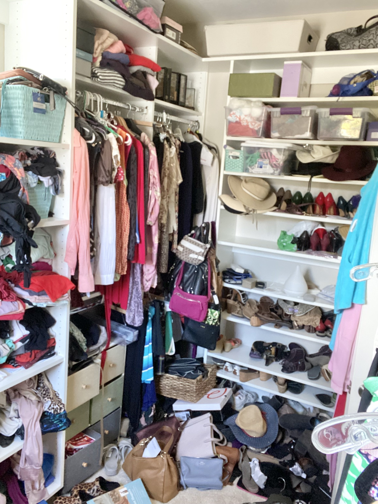
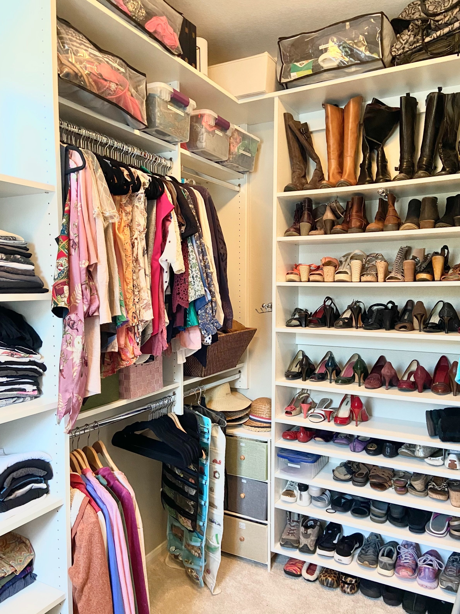

Closet Organization: Unlocking Style and Efficiency in Your Wardrobe
A well-organized closet is the key to a stress-free morning routine and a curated personal style. However, many closets become cluttered and disorganized over time, making it challenging to find what you need and maintain a tidy space. The process of organizing a closet may seem daunting, but with a systematic approach and a touch of creativity, you can transform your chaotic closet into a stylish and efficient haven. In this article, we will guide you through a step-by-step process to organize your closet, helping you unlock your personal style and streamline your daily dressing routine.
Step 1: Assess and Declutter The first step in closet organization is decluttering. Start by emptying your entire closet and assessing each item. Sort them into categories: keep, donate/sell, and discard. Be honest with yourself about what you genuinely need, what fits you well, and what aligns with your personal style. Remove any items that are damaged, don't fit, or haven't been worn in a long time.

Step 2: Categorize and Sort
Once you've decluttered, categorize your clothing and accessories. Group similar items together, such as tops, bottoms, dresses, outerwear, shoes, and accessories. This categorization process helps you visualize the storage needs for each category and simplifies the organization process.
Step 3: Optimize Space
Make the most of your closet space by utilizing effective storage solutions. Install adjustable shelves to accommodate different items. Use hanging organizers or garment racks for accessories like scarves, belts, and ties. Consider using specialty hangers for items like pants or skirts to save space and maintain their shape. Utilize hooks or over-the-door organizers for additional storage options.
Step 4: Implement Smart Storage Solutions.
Invest in smart storage solutions to maximize space and keep your belongings organized. Use bins, baskets, or fabric storage boxes to group and store smaller items like socks, underwear, or accessories. Label these containers to easily identify the contents. Utilize drawer dividers or organizers to keep items like jewelry, watches, or sunglasses neatly arranged. These storage solutions help maintain order and make it easier to find what you need.
Step 5: Create a Seasonal Rotation To optimize space and keep your closet clutter-free, consider implementing a seasonal rotation. Store out-of-season clothing in a separate location, such as under-bed storage or clear plastic bins. This practice frees up space in your closet and ensures that only the appropriate items for the current season are readily accessible.
Step 6: Arrange by Color and Accessibility Organize your clothes within each category by color. This simple technique adds visual appeal to your closet and makes it easier to find specific items. Additionally, arrange your clothes based on accessibility. Place frequently worn items at eye level or within easy reach, while less frequently worn pieces can be stored higher or in less accessible areas.
Step 7: Maintain Regular Maintenance Organizing your closet is an ongoing process. Schedule regular maintenance sessions to reassess and reorganize your wardrobe as needed. Donate or sell items that no longer fit your style or have gone unworn for an extended period. Make it a habit to return clothes to their designated places after each use, avoiding the accumulation of clutter.

Step 8: Embrace Personal Style
As you organize your closet, embrace your personal style and create a space that reflects it. Display your favorite pieces and accessories that inspire you. Consider adding decorative touches like artwork or a full-length mirror to enhance the aesthetic appeal. An organized closet that showcases your style will inspire confidence and make getting dressed a joyous experience.
Organizing a closet is a transformative process that streamlines your daily routine and enhances your personal style. By following the step-by-step process outlined in this article, you can create an organized and visually appealing closet that sparks joy and simplifies your dressing experience. Remember, an organized closet not only saves time but also allows you to make the most of your wardrobe and express your unique fashion sense. So, roll up your sleeves, embrace the challenge, and embark on the journey to a stylish and efficient closet that reflects your personal style. Your future self will thank you for it!